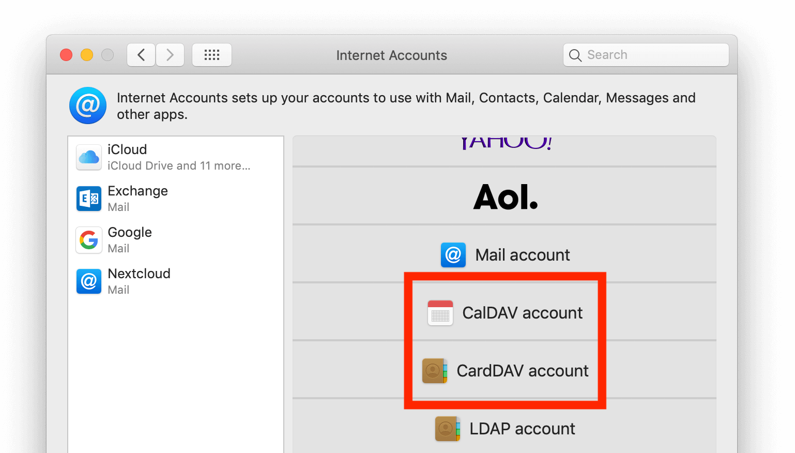

Synchronizace se systémem macOS
Nastavení vašich účtů
V následujících krocích přidáte prostředky vámi využívaného serveru pro CalDAV (kalendář) a CardDAV (kontakty) do svého Nextcloud.
Otevřete předvolby systému svého macOS zařízení.
Jděte na Internetové účty:

Klikněte na Přidat jiný účet… a klikněte na CalDAV účet pro Kalendář nebo CardDAV účet pro kontakty:

Poznámka
Není možné nastavit Kalendář/Kontakty dohromady. Je třeba je nastavit v oddělených účtech.
Jako Typ účtu vyberte Ruční a zadejte své příslušné přihlašovací údaje:
Uživatelské jméno: Vaše uživatelské jméno nebo e-mail v Nextcloud
Heslo: Vaše vytvořené heslo pro aplikaci / token (Více viz).
Adresa serveru: URL vámi využívaného Nextcloud serveru (např.
https://cloud.example.com)

Klikněte na Přihlásit se.
Pro CalDAV (kalendář): Nyní je možné vybrat, které aplikace chcete, aby tento prostředek používaly. Ve většině případů to bude aplikace „Kalendář“. Někdy také prostředek můžete chtít použít pro své Úkoly a připomínky.

Řešení problémů
macOS NEpodporuje CalDAV/CardDAV synchronizaci přes nešifrovaná
http://spojení. Ověřte, že mátehttps://zapnuté a nastavené na straně serveru a klienta.U certifikátů, podepsaných samy sebou je třeba, aby byly správně nastavené v klíčence macOS.